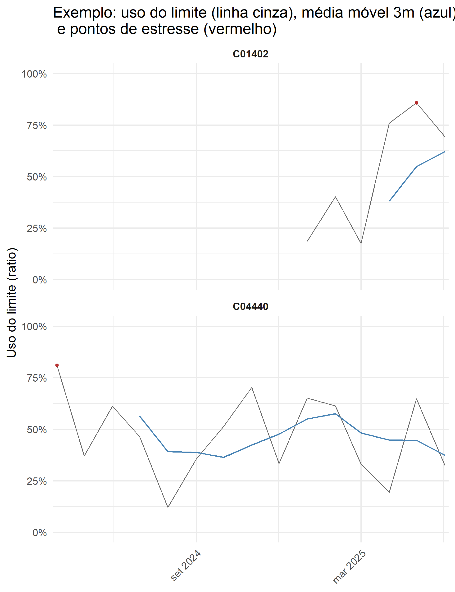
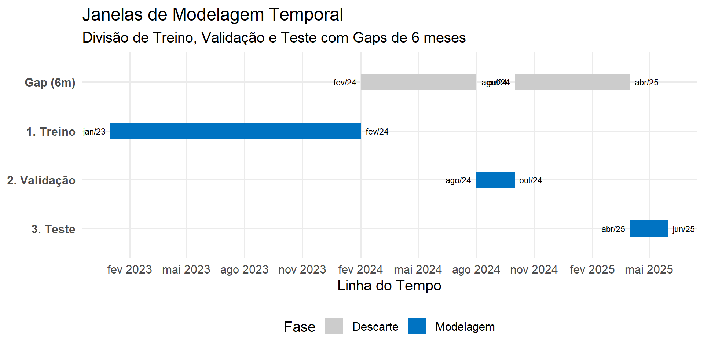
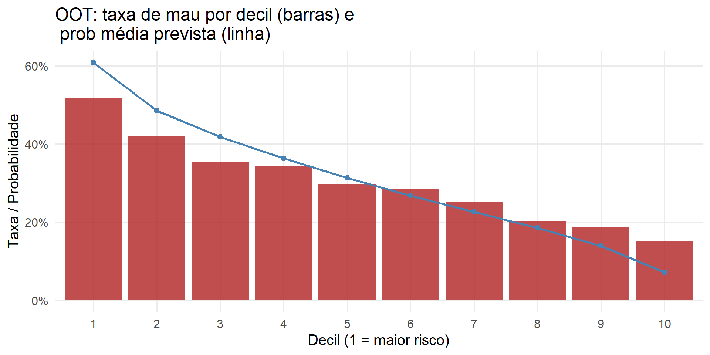

| id | data_ref | data_entrada | meses_desde_entrada | idade | idade_base | renda | limite | uso_limite | atraso | score_interno | ever60_mob6 | uso_limite_ratio | uso_limite_m3 | uso_limite_m6 | score_m3 | uso_trend_1m | uso_trend_3m | stress_flag | stress_m6 | coef_sobrelimitado |
|---|---|---|---|---|---|---|---|---|---|---|---|---|---|---|---|---|---|---|---|---|
| C02774 | 2025-01-01 | 2023-10-01 | 15 | 36 | 35 | 5560.900 | 8082.423 | 2059.4607 | 0 | 546.7684 | 0 | 0.2548073 | 0.1088636 | 0.2841248 | 546.7684 | 0.0016764 | 0.1190406 | 0 | 0.1428571 | 1.453438 |
| C05433 | 2025-02-01 | 2024-01-01 | 13 | 53 | 52 | 1788.957 | 3680.117 | 1305.8132 | 0 | 564.9195 | 0 | 0.3548293 | 0.3673882 | 0.2860693 | 564.9195 | -0.1869672 | 0.1222157 | 0 | 0.0000000 | 2.057129 |
| C03633 | 2023-06-01 | 2023-02-01 | 4 | 73 | 73 | 1790.081 | 3883.748 | 1848.5746 | 0 | 507.8136 | 1 | 0.4759769 | 0.3247425 | NA | 507.8136 | 0.2553740 | 0.1505876 | 0 | NA | 2.169594 |
| C03357 | 2024-07-01 | 2023-10-01 | 9 | 51 | 51 | 2826.290 | 3596.762 | 1360.2372 | 0 | 721.2466 | 1 | 0.3781839 | 0.3392371 | 0.3602482 | 721.2466 | 0.0001393 | 0.3250483 | 0 | 0.0000000 | 1.272609 |
| C01116 | 2025-05-01 | 2024-06-01 | 11 | 67 | 67 | 3402.560 | 6640.122 | 3119.9657 | 0 | 628.2960 | 0 | 0.4698657 | 0.3889150 | 0.4105351 | 628.2960 | 0.3892224 | -0.1359017 | 0 | 0.0000000 | 1.951508 |
| C05731 | 2025-03-01 | 2024-07-01 | 8 | 29 | 29 | 4121.655 | 7255.534 | 2086.1602 | 0 | 688.5637 | 0 | 0.2875268 | 0.4788105 | 0.4954009 | 688.5637 | -0.4969139 | -0.0793517 | 0 | 0.0000000 | 1.760345 |
| C05492 | 2024-11-01 | 2024-03-01 | 8 | 27 | 27 | 2622.119 | 4451.329 | 992.6026 | 1 | 770.8187 | 1 | 0.2229902 | 0.3879487 | 0.3287430 | 770.8187 | -0.3487881 | -0.1126202 | 0 | 0.0000000 | 1.697608 |
| C03127 | 2025-04-01 | 2023-04-01 | 24 | 61 | 59 | 3843.541 | 6101.812 | 3728.6442 | 1 | 529.4105 | 1 | 0.6110716 | 0.5701993 | 0.5000915 | 529.4105 | 0.2473673 | -0.0883621 | 0 | 0.0000000 | 1.587550 |
| C01083 | 2024-12-01 | 2024-09-01 | 3 | 65 | 65 | 2829.315 | 6913.339 | 4427.3885 | 0 | 662.7049 | 0 | 0.6404124 | 0.3282529 | NA | 662.7049 | 0.4656179 | 0.4198655 | 0 | NA | 2.443467 |
| C02329 | 2023-11-01 | 2023-01-01 | 10 | 34 | 34 | 2354.094 | 5112.739 | 1740.5230 | 0 | 644.4397 | 0 | 0.3404287 | 0.3711146 | 0.4305470 | 644.4397 | -0.3407751 | 0.0279865 | 0 | 0.0000000 | 2.171850 |
Modelagem Preditiva de Risco de Crédito com R
I Workshop de Estatística e Ciência de Dados Aplicadas a Finanças
Magno T. F. Severino
magnotairone@gmail.com
magnotairone@gmail.com
2025-11-12
Quem sou eu
- Bacharel em Matemática Computacional (UFMG)
- Mestre em Estatística (UFMG)
- Doutor em Probabilidade e Estatística (USP)
- Cientista de dados financeiros (BTG Pactual, Pefisa, XP Inc.)
- Professor de pós-graduação (Insper)
Agenda
Introdução ao CRISP-DM
Etapas de um projeto de modelagem preditiva de risco de crédito
Exemplo com dados simulados em R
CRISP-DM
Cross Industry Standard Process for Data Mining (Processo Padrão de Vários Segmentos de Mercados para Mineração de Dados)
Modelo amplamente adotado para orientar projetos de dados.
Descreve as fases típicas de um projeto, as tarefas de cada fase e as relações entre elas, oferecendo uma visão estruturada de todo o ciclo de vida da análise de dados.
Fonte: IBM CRISP-DM.

CRISP-DM
- Entendimento do negócio
- Entendimento dos dados
- Preparação dos dados
- Modelagem
- Avaliação
- Implantação
Repositório com código e dados: aqui.
1. Entendimento do negócio
Objetivo
Desenvolver um modelo comportamental de risco de crédito para clientes ativos, com horizonte de previsão de 6 meses, que estime a probabilidade de inadimplência e sirva de apoio à política de gestão de limites de crédito.
Contexto
A instituição já possui uma base de clientes com histórico de pagamentos e comportamento de uso do limite.
As revisões de limite ocorrem periodicamente (mensal, trimestral ou semestral).
A decisão de aumento, manutenção ou redução do limite deve equilibrar crescimento e risco de inadimplência.
1. Entendimento do negócio
Exemplo de uso prático
Clientes de baixo risco (\(PD < p_1\)): candidatos a aumento de limite ou ofertas de produtos adicionais.
Clientes de risco moderado (\(PD\) entre \(p_1\) e \(p_2\)): manter limite e monitorar comportamento.
Clientes de alto risco (\(PD > p_2\)): revisar limite para baixo ou bloquear aumentos automáticos.
1. Entendimento do negócio
Como o modelo se conecta à operação
| Decisão Operacional | Uso do Modelo | Exemplo de Ação |
|---|---|---|
| Aumento de limite | Permitir aumento automático apenas para clientes com PD < \(p_1\) | Campanha de upgrade de limite |
| Redução de limite | Reduzir limite de clientes com PD > \(p_2\) | Bloqueio preventivo |
| Cobrança preventiva | Priorizar contato com clientes de alto risco | Avisos ou ofertas de parcelamento |
| Monitoramento | Acompanhar evolução mensal do PD médio da carteira | Relatórios de risco comportamental |
2. Entendimento dos dados
Contexto (base simulada):
- Painel de 6.000 clientes
- Período: jan/2023 a dez/2025
- Cada cliente entra em uma
data_entradae gera observações mensais a partir dessa data.
- Objetivo: usar informações até
data_refpara preveratraso(evento binário) na janela de previsão.
2. Entendimento dos dados
3. Preparação dos dados
Seleção de público
Foco em clientes maduros: filtrar para
meses_desde_entrada >= 6nadata_ref.Removemos observações cujo rótulo “próximos 6 meses” estaria censurado:
data_ref <= corte_data_ref(última data_ref com +6 meses futuros observáveis).
3. Preparação dos dados
Engenharia de Atributos
Para melhorar a capacidade preditiva do modelo comportamental, criamos variáveis que capturam tendências, intensidade de uso do crédito e sinais de estresse financeiro ao longo do tempo.
Médias móveis (suavização do comportamento)
- uso_limite_m3: média do uso do limite nos últimos 3 meses; reduz variações pontuais.
- uso_limite_m6: tendência de uso em janela mais longa; indica padrão estável de consumo.
- score_m3: suavização do score interno; captura deterioração gradual do risco.
Tendências (aceleração do comportamento)
- uso_trend_1m: variação do uso do limite no último mês.
- uso_trend_3m: variação acumulada em 3 meses; identifica aumento persistente de consumo.
3. Preparação dos dados
Engenharia de Atributos
Indicadores de estresse financeiro
- stress_flag: cliente opera acima de 80% do limite no mês (sinal de aperto financeiro).
- stress_m6: proporção de meses em estresse nos últimos 6 meses; mede persistência do risco.
Exposição relativa
- coef_sobrelimitado: razão limite/renda; clientes com limite alto frente à renda tendem a maior risco.
Essas features ajudam a identificar sinais precoces de deterioração antes do atraso efetivo, apoiando decisões de gestão de limite.
Engenharia de Atributos
Para melhorar a capacidade preditiva do modelo comportamental foram criadas variáveis que capturam:
- Médias móveis:
uso_limite_m3,uso_limite_m6,score_m3— suavizam ruído e evidenciam tendência.
- Tendências:
uso_trend_1m,uso_trend_3m— indicam aceleração no consumo do limite.
- Estresse:
stress_flag(uso > 80%),stress_m6— detectam persistência de comportamento arriscado.
- Exposição relativa:
coef_sobrelimitado=limite / renda— avalia alavancagem do cliente.

4. Modelagem
Estratégia
- Para evitar vazamento de informação (target leakage) em modelos comportamentais, a separação dos dados precisa respeitar a lógica temporal do rótulo: cada observação (cliente, mês) usa informações dos próximos 6 meses para definir a variável-alvo (
ever60_mob6). - Assim, não é permitido que observações de treino e validação se sobreponham às janelas futuras usadas como rótulo.
Se uma observação tem data de referência t, sua janela de rótulo vai até t + 6 meses.
Logo, conjuntos de dados devem ser separados garantindo que:
- train_end + 6 meses < val_start
- val_end + 6 meses < test_start
4. Modelagem
5. Avaliação
5. Avaliação
| decil | n | prob_media | taxa_mau | n_mau | pct_obs |
|---|---|---|---|---|---|
| 1 | 1445 | 0.5445 | 0.5675 | 820 | 0.1000 |
| 2 | 1445 | 0.4544 | 0.4471 | 646 | 0.1000 |
| 3 | 1445 | 0.4007 | 0.3875 | 560 | 0.1000 |
| 4 | 1445 | 0.3525 | 0.3599 | 520 | 0.1000 |
| 5 | 1445 | 0.3063 | 0.2865 | 414 | 0.1000 |
| 6 | 1445 | 0.2652 | 0.2747 | 397 | 0.1000 |
| 7 | 1445 | 0.2267 | 0.2111 | 305 | 0.1000 |
| 8 | 1445 | 0.1887 | 0.1958 | 283 | 0.1000 |
| 9 | 1444 | 0.1502 | 0.1600 | 231 | 0.0999 |
| 10 | 1444 | 0.1022 | 0.1184 | 171 | 0.0999 |
6. Implantação
Perguntas que devem ser respondidas:
Como os resultados do modelo serão usados?
Definir claramente o processo decisório que consumirá as previsões: revisão de limite, priorização de ações ou encaminhamento a estratégias específicas (ex.: oferta de renegociação, redução preventiva de limite, manutenção ou aumento).Com qual frequência devem estar disponíveis?
Quais dados precisam estar disponíveis em produção?
Como será feito o monitoramento do modelo em produção?
Quais critérios determinam necessidade de reavaliação ou re-treino?
Alterações significativas no perfil da carteira, deterioração da performance, mudança de políticas internas ou ambiente macroeconômico.Como garantir auditabilidade e reprodutibilidade?